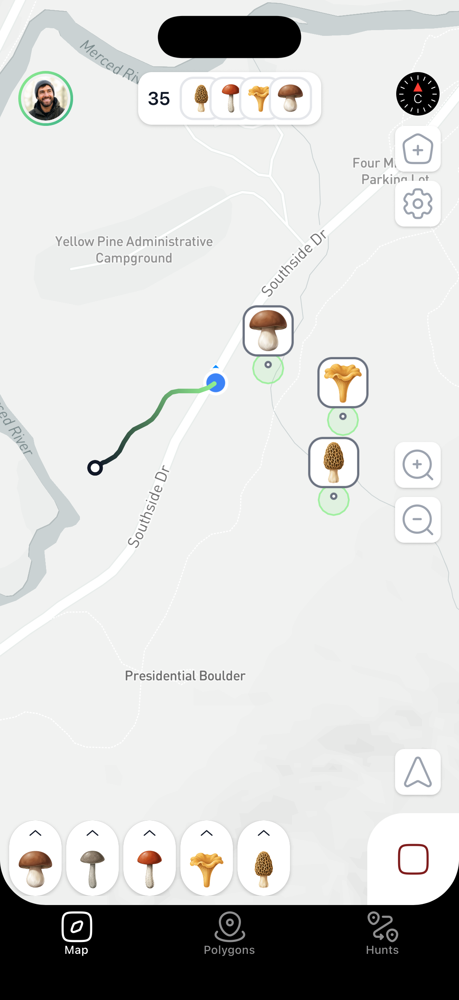
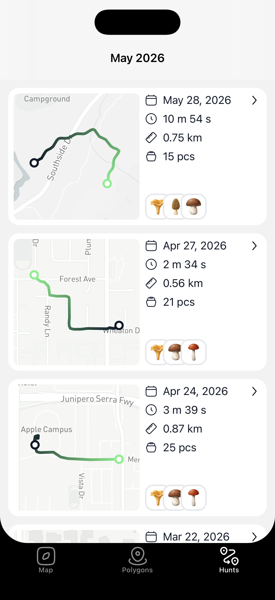
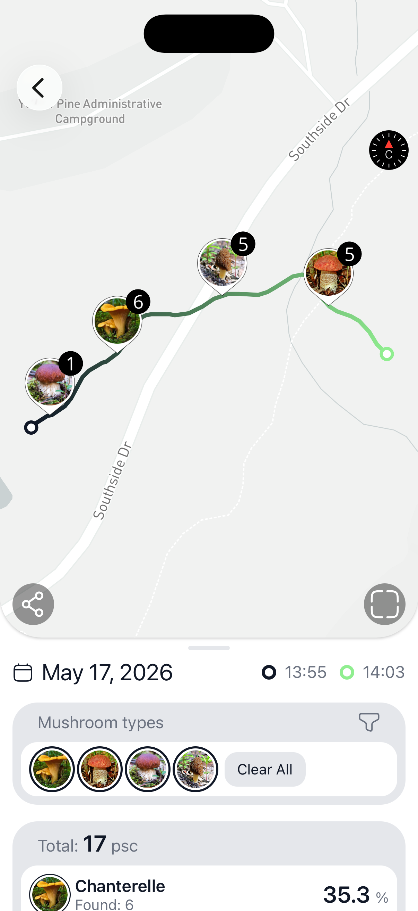
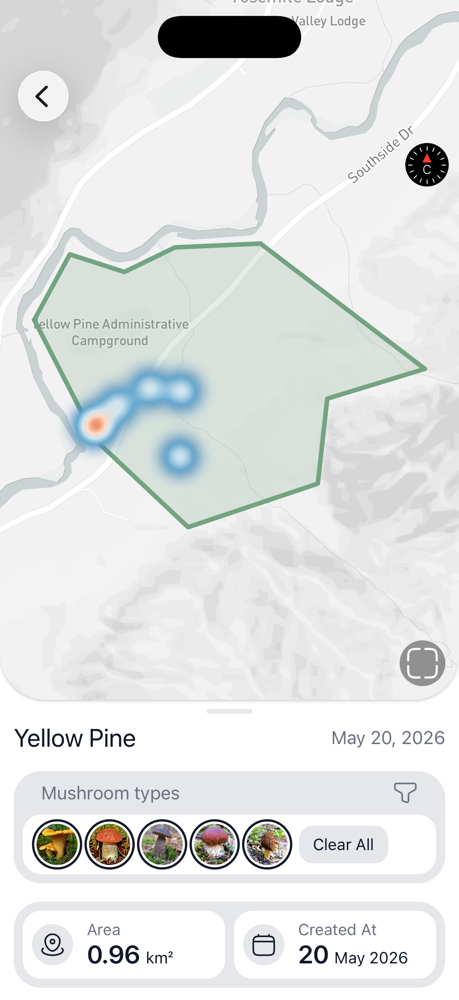
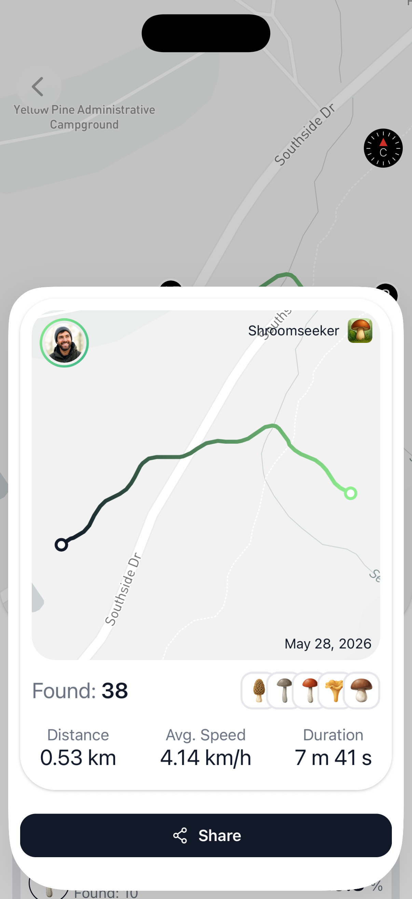
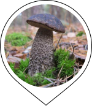
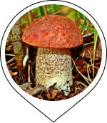
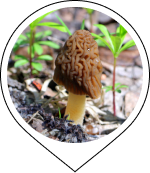

ShroomSeeker turns your phone into a forest log-book. Record hiking routes in the background, drop a pin the moment you spot a boletus, draw your favorite zones on the map, and watch your personal atlas grow season after season.

Designed for the rhythm of the hunt — boots on, phone in pocket, hands full of mushrooms.
Hit record and forget it. Background GPS writes your path to local SQLite with battery-friendly sampling.
A gesture-based counter that adds 10 finds as fast as you can pick them. Each one carries GPS, species, and a timestamp.
Draw your secret spots right on the map, name them, and let the per-zone heatmap show where the good clusters really are.
Know when the rains have done their work. Each saved zone gets its own weather chart so you can time the trip right.
A season-long view of every trip and every find. Spot the patterns in your own data.
Your hikes show up next to your workouts — distance, elevation, calories — without lifting a finger.
Open the map, tap Record. That's the last decision you need to make before the forest.
One tap per mushroom, swipe to change species. No typing, no fiddling — the forest doesn't wait.
Stop the route, give it a name, draw a zone around the sweet spot. Future-you will thank you.
Every screen below is a real screenshot from the shipping app. No renders, no mockups.



Turn any finished hunt into a clean share card — route, distance, average speed, duration and every mushroom you pinned. Post it, send it to a friend, or keep it as a season souvenir.

Filter your map by species, and let the heatmap show you which forests give up which mushrooms.



Right now every feature is unlocked for everyone. A Pro tier will arrive later with new tools on top — but everything you see today stays free for early users, forever.
Install today and today's feature set stays yours at no cost — even after Pro launches.
Not yet. The first release is iOS-only because of deep integration with Apple HealthKit and background location. Android is on the roadmap — leave your email below to hear first.
Yes. Routes, finds and polygons live in a local SQLite database on your device. You can track, pin and draw all day without a single bar of signal.
Your routes, finds and zones stay on your device. Authentication uses Supabase, but your hunting data isn't sold, shared, or indexed. Your secret spots stay yours.
GPS sampling is tuned for long walks, not fast drives — expect a full day of tracking on a modern iPhone with room to spare.
Yes — right now every feature is unlocked for everyone, no ads, no subscriptions. A Pro tier is planned for the future with new tools on top, but every feature available today will remain free for users who install the app during this early period.
Put ShroomSeeker in your pocket and let this season be the one you actually remember.